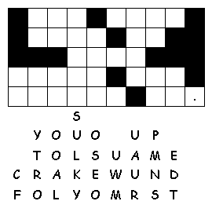
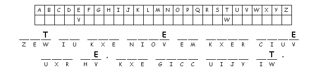

This week's lessons: Exodus 3:1-15 and Psalm 105:1-6, 23-26, 45c or Jeremiah 15:15-21 and Psalm 26:1-8 Romans 12:9-21 Matthew 16:21-28
Elementary School Pew-work
T H I N G S A S M
|
(Matthew 16:23 NRSV) But he turned and said to Peter, "Get behind me, Satan! You are a stumbling block to me; for you are setting your mind not on divine things but on human things." |
Word List |
from http://www.efree.mb.ca/lectionarypuzzles free to distribute for free with this notice. Words are in a straight line left to right or top to bottom |
||
|
Then Jesus said to his disciples: If any of you want to be my followers, you must forget about yourself. You must take up your cross and follow me. 25If you want to save your life, [a] you will destroy it. But if you give up your life for me, you will find it. 1. What did Jesus tell his disciples they must do? ________________________________________________________________ 2. What would happen if they gave their lives for Jesus? ________________________________________________________________ Questions taken from Sunday School Lessons; http://www.sundayschoollessons.com/baplord.htm |
Created by Puzzlemaker at DiscoverySchool.com |

Created
by Puzzlemaker
at DiscoverySchool.com
Next week: Exodus 12:1-14 and Psalm 149 or Ezekiel 33:7-11 and Psalm 119:33-40 Romans 13:8-14 Matthew 18:15-20